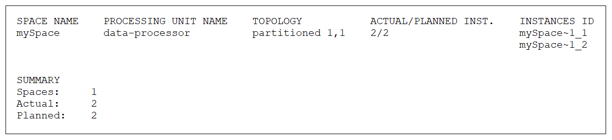
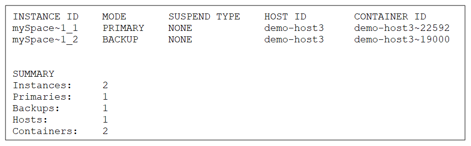

To view the Space runtime information:
The Space Overview page has two tabs, one that shows all Spaces in the cluster, and one that shows only unhealthy Spaces. You can see your Spaces as cards that contain the following information:
You can filter the view by cache ratio and RAM utilization, and you can sort by alert severity. You can also do a free text search by Space name.
Click a Space to drill through and see the following additional information for that Space in the Overview tab:
It is possible to drill down from the Space overview page to the Object Type level in two ways:
Press
Space
Command:
xap space list or insightedge space list
Description:
This command lists all the Spaces in a table with their Space name, Processing Unit name, cluster topology, number of actual/planned Space instances, and Instance ID.
Input Example:
Output Example:

Parameters and Options:
None.
Space Instance
Command:
xap space list-instances <name> or insightedge space list-instances <name>
Description:
The Space instances for the given Space are listed with their Instance ID, Mode, Host ID, and Container ID.
Input Example:
Output Example:

Parameters and Options:
| Item | Name | Description |
|---|---|---|
| Parameter | name | Provide the name of the Space for which to list the instances. |
All Spaces
Path
GET /spaces
Description:
The Spaces are listed with the Space name, Processing Unit name, cluster topology, number of Space instances, and Instance IDs.
Example Request:
curl -X GET --header 'Accept: application/json' 'http://localhost:8090/v2/spaces'
Example Response:
[
{
"name": "monitorSpace",
"processingUnitName": "monitorSpace",
"topology": {
"instances": 1
},
"instancesIds": [
"monitorSpace~1"
]
},
{
"name": "alertSpace",
"processingUnitName": "alertSpace",
"topology": {
"instances": 1
},
"instancesIds": [
"alertSpace~1"
]
},
{
"name": "mySpace",
"processingUnitName": "mySpace",
"topology": {
"instances": 1
},
"instancesIds": [
"mySpace~1"
]
}
]
Options:
None
Specific Space
Path
GET /spaces/{id}/instances
Description:
The given Space is listed with the Space name, Processing Unit name, cluster topology, number of Space instances, and Instance ID.
Example Request:
curl -X GET --header 'Accept: application/json' 'http://localhost:8090/v2/spaces/alertSpace/instances'
Example Response:
[
{
"id": "alertSpace~1",
"mode": "PRIMARY",
"partitionId": 0,
"backupId": 0,
"hostId": "admin",
"containerId": "admin~13972"
}
]
Options:
| Option | Description | Required |
|---|---|---|
| space name | Provide the name of the Space for which you want to see the runtime details. | Yes |
Specific Space Instance
Path
GET /spaces/{id}/instances{instanceId}
Description:
The given Space instance is listed with the Instance ID, Mode, Partition ID, Backup ID, Host ID, and Container ID.
Example Request:
curl -X GET --header 'Accept: application/json' 'http://localhost:8090/v2/spaces/alertSpace/instances/alertSpace~1'
Example Response:
{
"id": "alertSpace~1",
"mode": "PRIMARY",
"partitionId": 0,
"backupId": 0,
"hostId": "admin",
"containerId": "admin~13972"
}
Options:
| Option | Description | Required |
|---|---|---|
| space name | Provide the name of the Space for which you want to see the runtime details. | Yes |
| space Id | Provide the ID of the Space for which you want to see the runtime details. | Yes |
You can see the following high-level Space details in the main Spaces view:
| Item | Description |
|---|---|
| Space | Name of the Space. |
| Processing Unit | Name of the associated Processing Unit. |
| Application | Name of the client application using the Space. |
| Actual Instances | Number of Space instances in the cluster. |
| SLA |
Space cluster topology (number of instances, number of backups). The number of backups per partition is zero or one.
|
| Used Heap (MB) | Amount of memory currently being used, in MB and as a percentage of the total memory allocated to this Space. |
| Used Off-Heap Cache (MB) | (RocksDB storage driver only) Amount of off-heap memory currently being used for caching, in MB and as a percentage of the total off-heap memory allocated. |
| Used Off-Heap (MB) | (Off-heap storage driver only) Amount of off-heap memory currently being used, in MB and as a percentage of the total memory allocated for the blobstore. |
| Entries | Number of data entries to the Space. |
| Notify Templates | Number of Notify templates for this Space. |
| Connections | Number of currently connected clients. |
| Active Transactions | Number of transactions that are now active. |
Click the arrow in the right-hand column of the Space entry to drill through to the following additional details:
| Item | Description |
|---|---|
| Space Instance Name | Name of the Space instance in the cluster. |
| PU Instance Name | Name of the Processing Unit instance where the Space instance is located. |
| PID | Process ID of the Space instance. |
| Host IP | IP address of the host machine. |
| Total Memory (MB) | Amount of memory currently being used, in MB and as a percentage of the total memory allocated to this Space instance. |
| Entries | Number of data entries to the Space instance. |
| Notify Templates | Number of Notify templates for this Space instance. |
| Connections | Number of currently connected clients. |
| Active Transactions | Number of transactions that are now active. |
Refer to the GigaSpaces Management Center topics in the Administration section.
Refer to the Admin API topics in the Developer Guide.